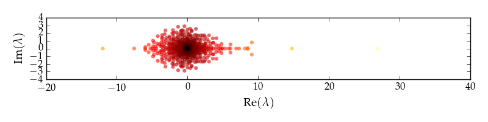
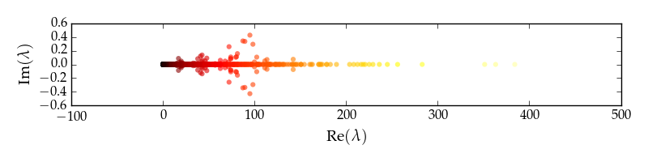
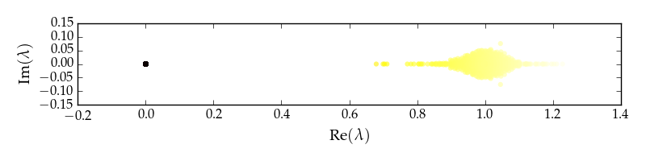
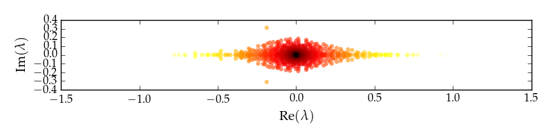
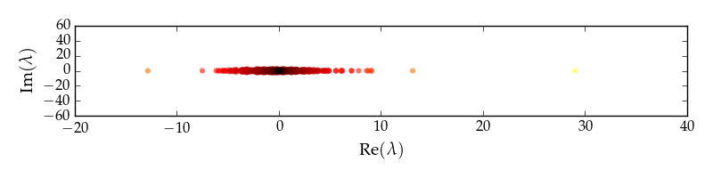

graph_tool.spectral - Spectral properties¶
Summary¶
adjacency |
Return the adjacency matrix of the graph. |
laplacian |
Return the Laplacian matrix of the graph. |
incidence |
Return the incidence matrix of the graph. |
transition |
Return the transition matrix of the graph. |
modularity_matrix |
Return the modularity matrix of the graph. |
Contents¶
-
graph_tool.spectral.adjacency(g, weight=None, index=None)[source]¶ Return the adjacency matrix of the graph.
Parameters: g :
GraphGraph to be used.
weight :
PropertyMap(optional, default: True)Edge property map with the edge weights.
index :
PropertyMap(optional, default: None)Vertex property map specifying the row/column indexes. If not provided, the internal vertex index is used.
Returns: a :
csr_matrixThe (sparse) adjacency matrix.
Notes
The adjacency matrix is defined as
\[\begin{split}a_{i,j} = \begin{cases} 1 & \text{if } (j, i) \in E, \\ 2 & \text{if } i = j \text{ and } (i, i) \in E, \\ 0 & \text{otherwise}, \end{cases}\end{split}\]where \(E\) is the edge set.
In the case of weighted edges, the entry values are multiplied by the weight of the respective edge.
In the case of networks with parallel edges, the entries in the matrix become simply the edge multiplicities (or twice them for the diagonal).
Note
For directed graphs the definition above means that the entry \(a_{i,j}\) corresponds to the directed edge \(j\to i\). Although this is a typical definition in network and graph theory literature, many also use the transpose of this matrix.
References
[wikipedia-adjacency] http://en.wikipedia.org/wiki/Adjacency_matrix Examples
>>> g = gt.collection.data["polblogs"] >>> A = gt.adjacency(g) >>> ew, ev = scipy.linalg.eig(A.todense())
>>> figure(figsize=(8, 2)) <...> >>> scatter(real(ew), imag(ew), c=sqrt(abs(ew)), linewidths=0, alpha=0.6) <...> >>> xlabel(r"$\operatorname{Re}(\lambda)$") <...> >>> ylabel(r"$\operatorname{Im}(\lambda)$") <...> >>> tight_layout() >>> savefig("adjacency-spectrum.pdf")
Adjacency matrix spectrum for the political blog network.
-
graph_tool.spectral.laplacian(g, deg='total', normalized=False, weight=None, index=None)[source]¶ Return the Laplacian matrix of the graph.
Parameters: g :
GraphGraph to be used.
deg : str (optional, default: “total”)
Degree to be used, in case of a directed graph.
normalized : bool (optional, default: False)
Whether to compute the normalized Laplacian.
weight :
PropertyMap(optional, default: True)Edge property map with the edge weights.
index :
PropertyMap(optional, default: None)Vertex property map specifying the row/column indexes. If not provided, the internal vertex index is used.
Returns: l :
csr_matrixThe (sparse) Laplacian matrix.
Notes
The weighted Laplacian matrix is defined as
\[\begin{split}\ell_{ij} = \begin{cases} \Gamma(v_i) & \text{if } i = j \\ -w_{ij} & \text{if } i \neq j \text{ and } (j, i) \in E \\ 0 & \text{otherwise}. \end{cases}\end{split}\]Where \(\Gamma(v_i)=\sum_j A_{ij}w_{ij}\) is sum of the weights of the edges incident on vertex \(v_i\). The normalized version is
\[\begin{split}\ell_{ij} = \begin{cases} 1 & \text{ if } i = j \text{ and } \Gamma(v_i) \neq 0 \\ -\frac{w_{ij}}{\sqrt{\Gamma(v_i)\Gamma(v_j)}} & \text{ if } i \neq j \text{ and } (j, i) \in E \\ 0 & \text{otherwise}. \end{cases}\end{split}\]In the case of unweighted edges, it is assumed \(w_{ij} = 1\).
For directed graphs, it is assumed \(\Gamma(v_i)=\sum_j A_{ij}w_{ij} + \sum_j A_{ji}w_{ji}\) if
deg=="total", \(\Gamma(v_i)=\sum_j A_{ji}w_{ji}\) ifdeg=="out"or \(\Gamma(v_i)=\sum_j A_{ij}w_{ij}\)deg=="in".Note
For directed graphs the definition above means that the entry \(\ell_{i,j}\) corresponds to the directed edge \(j\to i\). Although this is a typical definition in network and graph theory literature, many also use the transpose of this matrix.
References
[wikipedia-laplacian] http://en.wikipedia.org/wiki/Laplacian_matrix Examples
>>> g = gt.collection.data["polblogs"] >>> L = gt.laplacian(g) >>> ew, ev = scipy.linalg.eig(L.todense())
>>> figure(figsize=(8, 2)) <...> >>> scatter(real(ew), imag(ew), c=sqrt(abs(ew)), linewidths=0, alpha=0.6) <...> >>> xlabel(r"$\operatorname{Re}(\lambda)$") <...> >>> ylabel(r"$\operatorname{Im}(\lambda)$") <...> >>> tight_layout() >>> savefig("laplacian-spectrum.pdf")
Laplacian matrix spectrum for the political blog network.
>>> L = gt.laplacian(g, normalized=True) >>> ew, ev = scipy.linalg.eig(L.todense())
>>> figure(figsize=(8, 2)) <...> >>> scatter(real(ew), imag(ew), c=sqrt(abs(ew)), linewidths=0, alpha=0.6) <...> >>> xlabel(r"$\operatorname{Re}(\lambda)$") <...> >>> ylabel(r"$\operatorname{Im}(\lambda)$") <...> >>> tight_layout() >>> savefig("norm-laplacian-spectrum.pdf")
Normalized Laplacian matrix spectrum for the political blog network.
-
graph_tool.spectral.incidence(g, vindex=None, eindex=None)[source]¶ Return the incidence matrix of the graph.
Parameters: g :
GraphGraph to be used.
vindex :
PropertyMap(optional, default: None)Vertex property map specifying the row indexes. If not provided, the internal vertex index is used.
eindex :
PropertyMap(optional, default: None)Edge property map specifying the column indexes. If not provided, the internal edge index is used.
Returns: a :
csr_matrixThe (sparse) incidence matrix.
Notes
For undirected graphs, the incidence matrix is defined as
\[\begin{split}b_{i,j} = \begin{cases} 1 & \text{if vertex } v_i \text{and edge } e_j \text{ are incident}, \\ 0 & \text{otherwise} \end{cases}\end{split}\]For directed graphs, the definition is
\[\begin{split}b_{i,j} = \begin{cases} 1 & \text{if edge } e_j \text{ enters vertex } v_i, \\ -1 & \text{if edge } e_j \text{ leaves vertex } v_i, \\ 0 & \text{otherwise} \end{cases}\end{split}\]References
[wikipedia-incidence] http://en.wikipedia.org/wiki/Incidence_matrix Examples
>>> g = gt.random_graph(100, lambda: (2,2)) >>> m = gt.incidence(g) >>> print(m.todense()) [[-1. -1. 0. ..., 0. 0. 0.] [ 0. 0. 0. ..., 0. 0. 0.] [ 0. 0. 0. ..., 0. 0. 0.] ..., [ 0. 0. -1. ..., 0. 0. 0.] [ 0. 0. 0. ..., 0. 0. 0.] [ 0. 0. 0. ..., 0. 0. 0.]]
-
graph_tool.spectral.transition(g, weight=None, index=None)[source]¶ Return the transition matrix of the graph.
Parameters: g :
GraphGraph to be used.
weight :
PropertyMap(optional, default: True)Edge property map with the edge weights.
index :
PropertyMap(optional, default: None)Vertex property map specifying the row/column indexes. If not provided, the internal vertex index is used.
Returns: T :
csr_matrixThe (sparse) transition matrix.
Notes
The transition matrix is defined as
\[T_{ij} = \frac{A_{ij}}{k_j}\]where \(k_i = \sum_j A_{ji}\), and \(A_{ij}\) is the adjacency matrix.
In the case of weighted edges, the values of the adjacency matrix are multiplied by the edge weights.
Note
For directed graphs the definition above means that the entry \(T_{i,j}\) corresponds to the directed edge \(j\to i\). Although this is a typical definition in network and graph theory literature, many also use the transpose of this matrix.
References
[wikipedia-transition] https://en.wikipedia.org/wiki/Stochastic_matrix Examples
>>> g = gt.collection.data["polblogs"] >>> T = gt.transition(g) >>> ew, ev = scipy.linalg.eig(T.todense())
>>> figure(figsize=(8, 2)) <...> >>> scatter(real(ew), imag(ew), c=sqrt(abs(ew)), linewidths=0, alpha=0.6) <...> >>> xlabel(r"$\operatorname{Re}(\lambda)$") <...> >>> ylabel(r"$\operatorname{Im}(\lambda)$") <...> >>> tight_layout() >>> savefig("transition-spectrum.pdf")
Transition matrix spectrum for the political blog network.
-
graph_tool.spectral.modularity_matrix(g, weight=None, index=None)[source]¶ Return the modularity matrix of the graph.
Parameters: g :
GraphGraph to be used.
weight :
PropertyMap(optional, default: True)Edge property map with the edge weights.
index :
PropertyMap(optional, default: None)Vertex property map specifying the row/column indexes. If not provided, the internal vertex index is used.
Returns: B :
LinearOperatorThe (sparse) modularity matrix, represented as a
LinearOperator.Notes
The modularity matrix is defined as
\[B_{ij} = A_{ij} - \frac{k^+_i k^-_j}{2E}\]where \(k^+_i = \sum_j A_{ji}\), \(k^-_i = \sum_j A_{ij}\), \(2E=\sum_{ij}A_{ij}\) and \(A_{ij}\) is the adjacency matrix.
In the case of weighted edges, the values of the adjacency matrix are multiplied by the edge weights.
References
[newman-modularity] M. E. J. Newman, M. Girvan, “Finding and evaluating community structure in networks”, Phys. Rev. E 69, 026113 (2004). DOI: 10.1103/PhysRevE.69.026113 Examples
>>> g = gt.collection.data["polblogs"] >>> B = gt.modularity_matrix(g) >>> B = B * np.identity(B.shape[0]) # transform to a dense matrix >>> ew, ev = scipy.linalg.eig(B)
>>> figure(figsize=(8, 2)) <...> >>> scatter(real(ew), imag(ew), c=sqrt(abs(ew)), linewidths=0, alpha=0.6) <...> >>> xlabel(r"$\operatorname{Re}(\lambda)$") <...> >>> ylabel(r"$\operatorname{Im}(\lambda)$") <...> >>> tight_layout() >>> savefig("modularity-spectrum.pdf")
Modularity matrix spectrum for the political blog network.